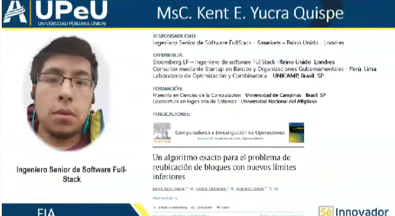

Aplicaciones de la Ciencia de Datos en la Ingeniería
La ciencia de datos es una herramienta esencial en la ingeniería moderna. Desde la recopilación y limpieza de datos hasta su análisis y visualización, utilizamos algoritmos avanzados para extraer información útil que guía la toma de decisiones. Las aplicaciones prácticas incluyen la optimización de finanzas personales, el monitoreo energético en el hogar, la gestión del tiempo y la mejora de la seguridad. Estos análisis no solo mejoran la eficiencia, sino que también identifican patrones y riesgos, ayudando a mitigar problemas antes de que ocurran.
En el ámbito de la ingeniería, la capacidad de predecir resultados y gestionar riesgos es crucial. Utilizamos modelos estadísticos y de machine learning para prever eventos, ajustar estrategias y minimizar riesgos. Este enfoque nos permite ofrecer soluciones precisas y eficientes, mejorando la satisfacción del cliente y la estabilidad operativa.